0. Summary
#FoundingDesigner
#DiscoverabilityStrategy
#ProductScale
To solve the pain points of fragmented demo resources and the high search friction faced by AWS Solution Architects (SAs), I led the design of the GenAI Labs Demo Portal from 0 to 1 as the Founding Designer. By establishing a Discoverability Strategy rooted in metadata and taxonomy modeling, I transformed the portal from a simple directory into a strategic knowledge hub, driving a 90%+ adoption rate across the North America sales organization.
- The Challenge: In the 2024 GenAI surge, AWS SAs lacked a unified platform to find, evaluate, and reuse high-quality AI demos. The existing makeshift demo pages lacked structural clarity, forcing teams to rely on manual coordination and tribal knowledge, which slowed down customer-facing delivery.
- The Innovation: I reframed the problem from "improving search" to "designing for discoverability." I designed a full-lifecycle framework covering pre-search (newsletter enablement), in-search (industry-mapped taxonomy), and post-search (Favorites and persistence). This system reduced cognitive load by mirroring the organizational structure SAs already use in their daily workflows.
- The Impact:
- Rapid Adoption: Increased North America SA penetration from 5% at launch to 92.2% within six months.
- Global Scale: Reached over 40% global penetration, supporting high-visibility events including the CEO Keynote at re:Invent 2024.
- Operational Efficiency: Enabled a peak of 600+ views per day for single demos, effectively automating the discovery phase for hundreds of customer engagements.
1. The Birth of GenAI Labs
#GenAI
#0to1
#Platform
In the summer of 2024, as AI adoption was accelerating rapidly, the AWS Sales org formed a new team called GenAI Labs.
The team's mission was simple: quickly build high-quality demos that could help customers understand how AWS AI services — such as Amazon Q and Amazon Bedrock — could be applied in real-world scenarios.
At the beginning, the GenAI Labs team consisted primarily of Solution Architects (SAs). That made sense for speed. They knew how to build systems and assemble demos quickly.
But building a technically sound demo is different from shaping something that truly reflects customer needs and communicates business value.
As the founding designer, I was internally transferred into the team to bring that perspective — ensuring that what we built was not just functional, but aligned with how customers think and decide.
My primary responsibility was twofold: to design every customer-facing demo experience, and to build a Demo Portal platform that allowed AWS Sales and Marketing to discover these demos, while also enabling other internal teams to onboard their own demos onto the platform.
This project tells the case study of how I led the 0 to 1 productization of that platform — and how it ultimately evolved into a shared GenAI demo knowledge hub across the organization.
2. Phase 1 — Establishing Discoverability as a Strategy
#Discoverability
#Strategy
#UXResearch
#DesignDocumentation
When I joined, SAs had already built an early internal test system to host demos. It worked as a fast internal placeholder, but the experience had two immediate gaps: the portal did not clearly communicate what it was for — whether it was meant to locate a known demo or explore what existed — and the UI quality was inconsistent with AWS standards. I documented these observations in "GenAI Labs Demo Portal UI/UX discussion – Phase 1".

At the same time, leadership framed the challenge primarily as a search problem. The assumption was straightforward: if users could search better, they could find demos faster — and that would translate into broader usage across the team.
But through conversations with Field SAs (Tech Sales) and my own use of Version 0.1, I realized the issue went far beyond search mechanics. Search was only one moment inside a larger journey.
The real problem was discoverability.
Discoverability does not begin when someone types into a search bar. It starts before that — when users become aware that something exists. It continues during evaluation, and it extends after selection, when users decide whether to reuse something again.
Instead of treating Phase 1 as a search optimization effort, I reframed it as a structured discoverability strategy across three stages: pre-search, in-search, and post-search (see "Improve discoverability of demos on GenAI Labs Demo Portal").

2.1 Pre-search — Before Any Search Action
Pre-search refers to everything that helps presenters discover relevant demos before typing a keyword or triggering a search query.
In Version 0.1, this stage was structurally undefined. The portal did not clearly communicate whether it was meant for searching a known demo or exploring what existed. Industry pages functioned more like filtered result lists than guided navigation paths. When users browsed through industry categories, they were shown a flat list of demos without progressive narrowing or contextual structure. Discovery was triggered only after an explicit search action.
At that time, GenAI Labs was a newly formed team. We considered several ways to increase demo visibility across Field SAs (Tech Sales):
- Hosting internal training sessions on AI services and demo use cases
- Running recurring live enablement sessions
- Publishing AI-related lectures within internal learning platforms
However, each of these required significant coordination and ongoing facilitation. As a new team, our priority was still building demos. We needed a scalable mechanism that would not divert resources away from core development.
That constraint shaped the decision.
Instead of high-effort enablement channels, I designed a content-based email newsletter as a lightweight but repeatable discovery layer. The newsletter was structured, not promotional:
- Newly onboarded demos clearly surfaced
- Industry and focus alignment visible at a glance
- Estimated time to review
- Direct entry into the portal
We explored three versions and selected the most scannable format to reduce friction. The goal was not engagement for its own sake. The goal was visibility with minimal overhead.
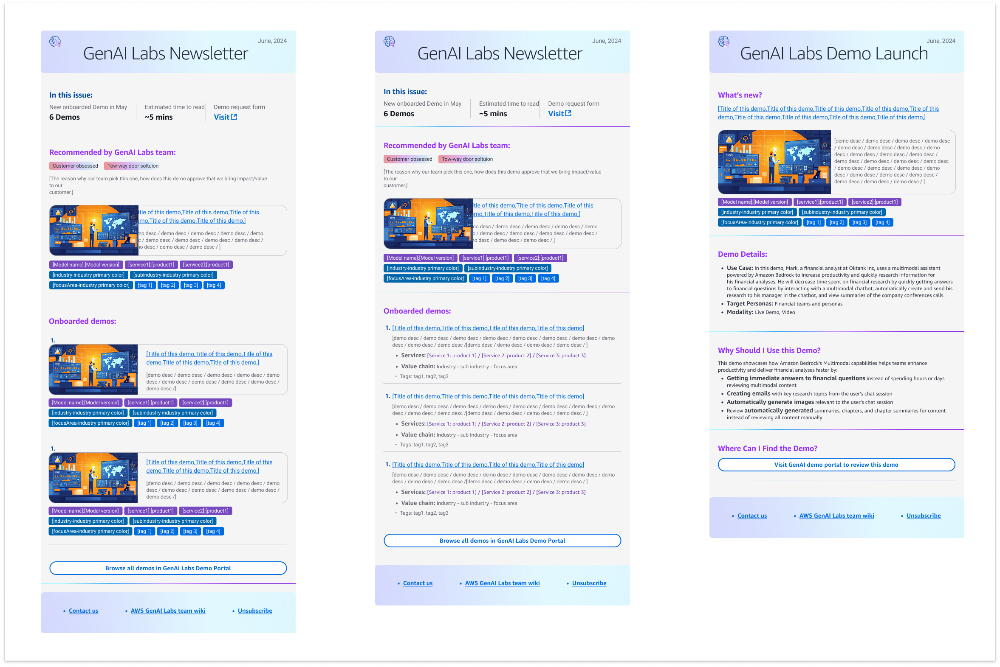
On the portal itself, I restructured navigation so that Industry → Sub-industry → Focus Area became a progressive browsing route.
This hierarchy was intentionally inspired by how the Field SAs (Tech Sales) organization already operates. Every Field SAs (Tech Sales) team and Solution Architect clearly understands which industry vertical they are responsible for. That structure is part of their daily workflow (see "Industry value mapping category taxonomy").

By mirroring this familiar structure inside the portal, we reduced the cognitive effort required to use it. Field SAs (Tech Sales) did not need to learn a new taxonomy or reinterpret how demos were categorized. They could begin from what they already knew — their industry responsibility — and narrow down from there.
More importantly, this alignment served a broader purpose.
When a system reflects how users organize their own work, it communicates that the tool was designed around their reality, not imposed as an internal demo catalog. That structural familiarity accelerated adoption and helped build trust early.
If SAs entered with a domain context rather than a demo name, they could narrow progressively within a familiar hierarchy, surfacing a focused set of relevant demos instead of a flat, unstructured results list.
2.2 In-search — When SAs Perform Search
In-search begins when SAs actively enter keywords or trigger a search query.
In Version 0.1, search operated as a basic keyword match against titles and descriptions. Results were presented as flat lists without strong structural context. Filtering options were limited, and result management controls were minimal. As demo volume increased, this made precise retrieval more difficult.
In Phase 1, I did not remove search. I strengthened it — while anchoring it to structure.
We implemented two levels of search:
1. Global keyword search (Homepage level)
A lightweight search bar allowed SAs to quickly enter titles, descriptions, or tags. This supported users who arrived with a specific demo name or known keyword.
A lightweight search bar allowed SAs to quickly enter titles, descriptions, or tags. This supported users who arrived with a specific demo name or known keyword.
2. Structured search within context
Within the portal, search could query across defined metadata fields. Every key attribute — including services, industry, and focus area — became searchable. This preserved the flexibility of keyword search while ensuring results remained aligned with the structured hierarchy.
Within the portal, search could query across defined metadata fields. Every key attribute — including services, industry, and focus area — became searchable. This preserved the flexibility of keyword search while ensuring results remained aligned with the structured hierarchy.
To support growing demo volume and improve result management, we also introduced:
- Sorting controls
- Pagination
- Clear filter visibility and reset mechanisms
These changes reduced repeated keyword iteration and allowed SAs to refine results systematically rather than restarting the search process each time.
Search no longer operated as a flat keyword lookup. It worked together with structured metadata, filters, sorting, and pagination to support controlled refinement.

2.3 Post-search — After Results Are Returned
Post-search refers to what happens after an SA receives a set of search results — whether relevant demos are surfaced or not.
In Version 0.1, the journey effectively ended at the results page. If relevant demos appeared, there was no mechanism to retain them for later use. If no suitable demo matched the need, there was no structured next step.
Discovery either succeeded temporarily or stalled.
In Phase 1, I defined post-search as a continuity layer rather than an endpoint.
Two structural needs were identified:
- A retention mechanism that would allow SAs to preserve selected demos for future preparation.
- A structured submission path when existing demos did not meet the requirement.
At this stage, both were positioned as mid-term goals.
For the submission path, we designed a guided request page. Instead of asking SAs to manually draft emails or tickets, the system provided structured prompts to help them articulate their needs. The goal was to transform "no suitable demo found" into a clear signal for future demo development rather than a dead end.
As demo volume increased and service-level navigation was later introduced, the need for manual ticket submission naturally decreased. In Phase 2, a Favorites mechanism was implemented to support retention and reusable preparation.
Post-search in Phase 1 was therefore about defining continuity — ensuring discovery would evolve from one-time retrieval into an ongoing system.
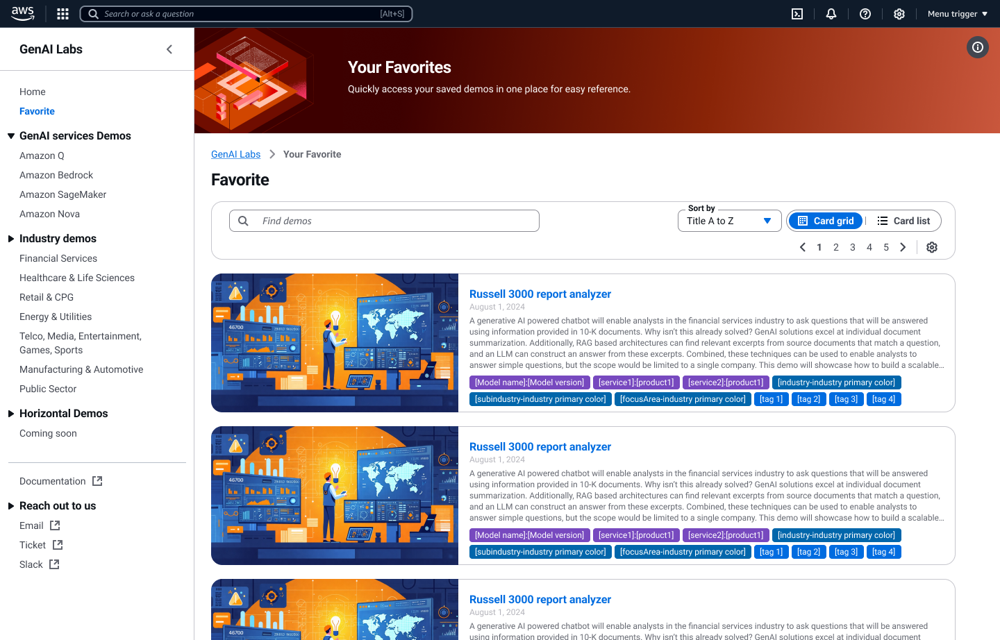
2.4 Homepage — Structuring System Recommendation Before Search
If search defines retrieval, the homepage defines orientation.
In Version 0.1, demos were listed without a strong visual or structural logic. As demo volume increased, the homepage needed to communicate hierarchy, importance, and relevance — before any navigation or search interaction happened.
I redesigned how every demo is represented inside the Portal.
Each demo was standardized into a consistent card-based layout, ensuring:
- Clear visual separation between demos
- Consistent metadata presentation (title, tags, description)
- Predictable interaction pattern
Consistency reduced cognitive load. Every demo followed the same visual grammar.
Beyond visual consistency, I introduced hierarchical scaling through size and placement.
The homepage is structured from system-driven recommendation to user-driven retention:
Latest Demos (Top Section)
The three most recently launched demos appear at the top.
The most recent demo is displayed in the largest card format, signaling importance and recency.
Recent Visits (Middle Section)
This section reflects user behavior.
It dynamically surfaces demos the user has already interacted with.
We ensured backend APIs remained stable so previously viewed demos would not break or disappear, reinforcing continuity and trust.
Favorites (Lower Section)
The smallest but most intentional layer — demos explicitly saved by the user.
Although Favorites can also be accessed from the left navigation, placing them here reinforces the full discovery arc:
System recommends → User explores → User revisits → User curates
The visual flow intentionally moves from large to small, from broadcast to personal.
This structural ordering communicates a logic:
The Portal begins as a discovery engine, but it ends as a personalized working library.

Implementation choice (what we intentionally didn't do yet)
To ship quickly, we used Cloudscape components to bring the demo detail page up to a baseline level of consistency, without over-investing in deep refinement during Phase 1. At that time, we believed the biggest bottleneck was still finding relevant demos—not reading long details—so we prioritized discovery first, then depth later.
This reframing shifted the conversation from "improving search" to building a discoverability system.
Phase 1 was not about tweaking filters.
It was about redefining how demos are surfaced, evaluated, and reused within the organization.
2.5 Initial Launch and Rapid Regional Adoption (July–November 2024)
I joined the GenAI Labs Demo Portal team in July 2024 as the sole designer.
Within approximately three weeks, I completed the first structural redesign focused on discoverability and search clarity.
Working closely with the engineering team, we shipped the first iteration in early September 2024.
At the time of launch, adoption in North America was approximately 5% penetration among SAs.
Adoption Growth
Following the release — and amplified by re:Invent traffic — adoption in North America accelerated significantly:
- September: 29.4%
- October: 57.9%
- November: 92.2%
By November, the portal had reached near-complete penetration within the North America SA population.
Globally, penetration reached approximately 40.7% during the same period.
These metrics were tracked through Amazon QuickSight, AWS's business intelligence and analytics platform, which aggregates login behavior, demo engagement, and usage patterns across regions.

Engagement Signal Beyond Adoption
Beyond adoption rate, engagement depth became even more meaningful.
One demo — focused on AI diagnostics for food manufacturing production lines — reached a peak of 600+ views in a single day.
In practical terms, this meant:
On that day, roughly one out of every two to three Field SAs (Tech Sales) or AI-service-related SAs active in North America interacted with that demo.
For a team of only twenty members — and as the only designer on the project — this was a powerful validation signal:
It indicated that the Field SAs (Tech Sales) organization was actively finding and using demos that supported real customer conversations.
Regional Growth Analysis
While North America adoption accelerated rapidly, global growth progressed more gradually.
We analyzed several contributing factors:
- Pre-search amplification — We leveraged Amazon's internal .com email system to promote demos. This significantly boosted North America visibility.
- Domain segmentation — Some regions operate under localized domains (e.g., .de in Germany, .jp in Japan), reducing exposure to .com-based internal communications.
- Language barrier — All demos were fully in English. Lack of localization likely reduced accessibility and shareability in non-English-speaking regions.
These structural constraints — rather than product weakness — largely explain the slower global penetration curve.
Strategic Conclusion
Phase 1 successfully:
- Increased structural clarity
- Reduced search friction
- Drove regional adoption at scale
North America acted as an early stress-test environment, validating that SAs could efficiently discover and deploy demos in customer-facing scenarios.
The next challenge was no longer discoverability.
It was supporting decision-making and usage at organizational scale — which led directly into Phase 2: the Demo Detail Page redesign.
3. Redesigning the Demo Detail Page for Scaled Usage
#Phase2
#Scalability
#reInvent2024
3.1 From Regional Growth to Global Adoption
Following the initial launch and rapid regional adoption, a second inflection point emerged during AWS re:Invent 2024.
Several GenAI Labs demos were featured in the CEO keynote delivered by Matt Garman. One of the highlighted demos — focused on automating complex workflows under Amazon Q — was a demo I led and designed as the sole designer on the team. The CEO keynote presentation was built directly from my Figma prototype, bringing the product to executive-level visibility.
The keynote remains publicly available. The demo segment appears at 2:31:43:
If the video above does not display successfully, please click the button below to watch it on YouTube. The link will start at 2:31:43 (append t=9103s to the URL to jump to the demo segment).
The keynote exposure had an immediate global impact.
Because these demos were centralized in our Portal, Field SAs (Tech Sales) worldwide began actively searching for them. What had previously been regional growth became global demand.
At that point:
- Global SA penetration had reached approximately 40.7%.
- After the keynote, global usage began increasing at a sustained rate of roughly 10–12% month-over-month.
This was not incremental adoption.
It was amplification driven by executive visibility.
It was amplification driven by executive visibility.
For the Portal, this meant something critical:
The system was no longer supporting discoverability alone.
It was now supporting high-visibility, globally referenced demos.
It was now supporting high-visibility, globally referenced demos.
After re:Invent 2024, adoption accelerated rapidly across North America and began expanding globally. The Portal was no longer an experimental tool — it had become infrastructure for high-visibility demos.
This scale brought organizational attention. With leadership support and additional resources, we initiated a deeper system redesign — not to increase visibility, but to improve decision-making and real-world usability.
That shift exposed a new requirement:
The inflection point arrived at re:Invent 2024.
SAs needed to quickly understand it, position it, and deploy it in live conversations.
SAs needed to quickly understand it, position it, and deploy it in live conversations.
Comparison between the initial v0.1 screenshot and Phase 2 redesign (v2.0)


3.2 Reconstructing the SA End-to-End Workflow
With adoption accelerating after re:Invent and leadership support secured, the next step was not another isolated feature improvement. It was to step back and examine the entire SA working chain.
In the re:Invent recap report (see report (Chapter 3 only)), I reframed the Portal not as a discovery tool, but as infrastructure embedded in the full lifecycle of how SAs operate.

Previously, our discussions had centered on specific friction points — search relevance, navigation clarity, metadata consistency. While these were valid improvements, they addressed individual moments rather than the broader system.
To shift the conversation, I reconstructed the journey around how SAs actually operate before, during, and after customer engagements. Instead of presenting isolated UX issues, I mapped the Portal against the full SA workflow and used that model to support the leadership discussion and decision.
This reframing helped leadership see that the Portal was no longer a feature set to optimize, but a system that needed to support continuity across preparation, delivery, and enablement.
Previously, our design focus centered on a narrow problem:
How do SAs find demos?
But real usage — especially after re:Invent — revealed something much broader.
Demos were no longer accessed in isolation. They were:
- Referenced in executive-level events, reinforcing AWS AI services' industry positioning and strategic messaging
- Reused across multiple customer engagements, directly influencing sales conversations and solution adoption
- Used as standardized internal training references for onboarding new SAs and enabling community knowledge sharing
This meant the Portal was no longer supporting a single interaction.
It was sitting inside an ongoing SA workflow.
It was sitting inside an ongoing SA workflow.
In the report, I mapped this connected chain across the lifecycle of SA work. This was not simply a UX diagram — it became a strategic alignment tool.
The problem was no longer:
"How do we improve search?"
It became:
"How do we support SAs in making confident decisions under time pressure, in high-visibility contexts, and across repeated usage?"
This broader view established the foundation for the next redesign focus: the Demo Detail Page.
If discovery brought SAs into the system, the Detail Page determined whether the system truly supported their work.
3.3 Identifying the Structural Friction
Once the SA workflow was reframed at a system level, the next step was to locate where friction occurred within that chain.
Behavioral data on the Demo Detail Page showed:
- Approximately 42% bounce rate — nearly half of users exited without further interaction.
- Less than 30% average scroll depth — most users did not move beyond the top third of the page.
Users were reaching the page, but not engaging with it.
If discovery was functioning and traffic was growing, the breakdown was likely happening at the evaluation stage.
To investigate further, I secured focused time and resources to run a workshop with one SA and one product manager. Given the team's size and priorities, this required deliberate coordination rather than being an assumed step (see Workshop report, Chapter 1 only).

The composition was intentional:
- The SA represented hands-on execution — how demos are selected and used in real customer contexts.
- The product manager brought business priorities and leadership considerations.
- As the designer, I synthesized the discussion, identified structural gaps, and translated them into actionable design directions.
Using the reconstructed journey as context, we analyzed how demos were evaluated and what information users relied on when deciding whether to use one.
The goal was to identify what was missing or misaligned in the decision process that led users to disengage.
3.4 Translating Workshop Requirements into a Designed Detail Page System
In the workshop, we consolidated the previously identified friction points into structured requirement clusters (see Detail page usability testing report, Chapters 1–4 only).
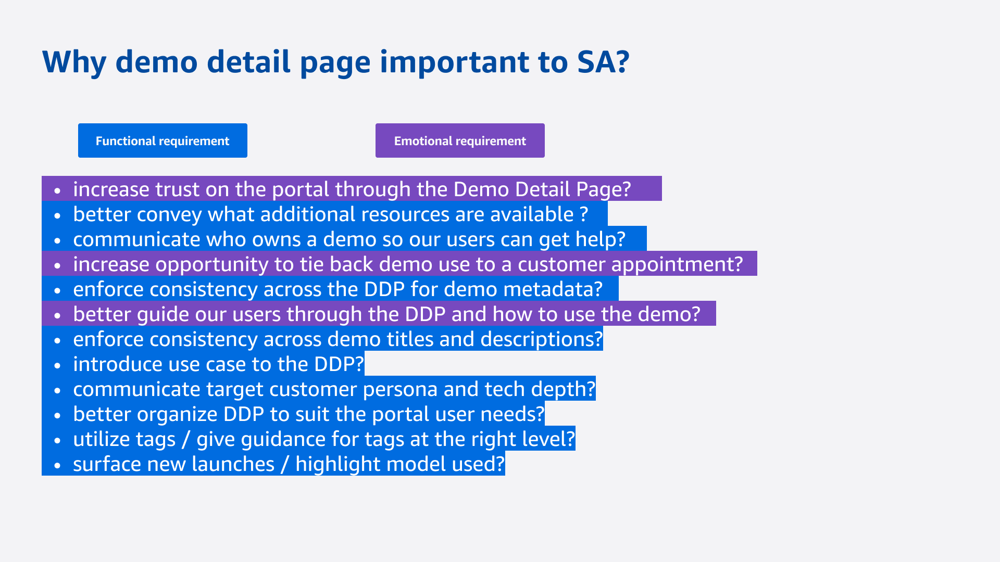
These clusters were divided into:
- Functional requirements
- Emotional requirements
The functional requirements included: Better page layout; Additional resources; Owner visibility; Consistency; Explicit use case; Target persona; Target audience; Technical depth; Tag governance; Model transparency.
The emotional requirements included: Trust; Intuitive guidance; Transparency; Confidence in customer fit; Controllability.
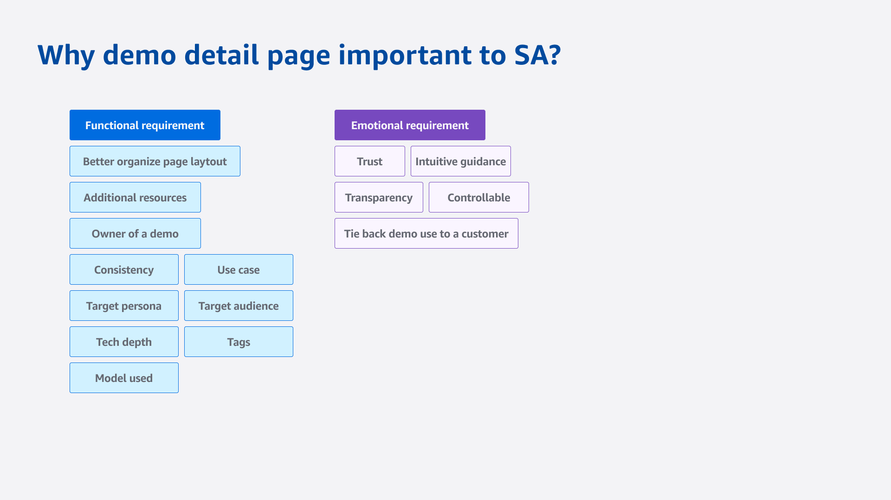
The goal was to translate these requirements into a page structure that supports fast evaluation, confident positioning, and scalable reuse.
From Requirement Clusters to Page Architecture
Based on the workshop outputs, I translated each requirement into a structural layout decision.
The page was reorganized into three information layers:
- Immediate orientation
- Decision validation
- Technical and operational depth
This structure reflects how SAs evaluate demos under real presentation constraints.
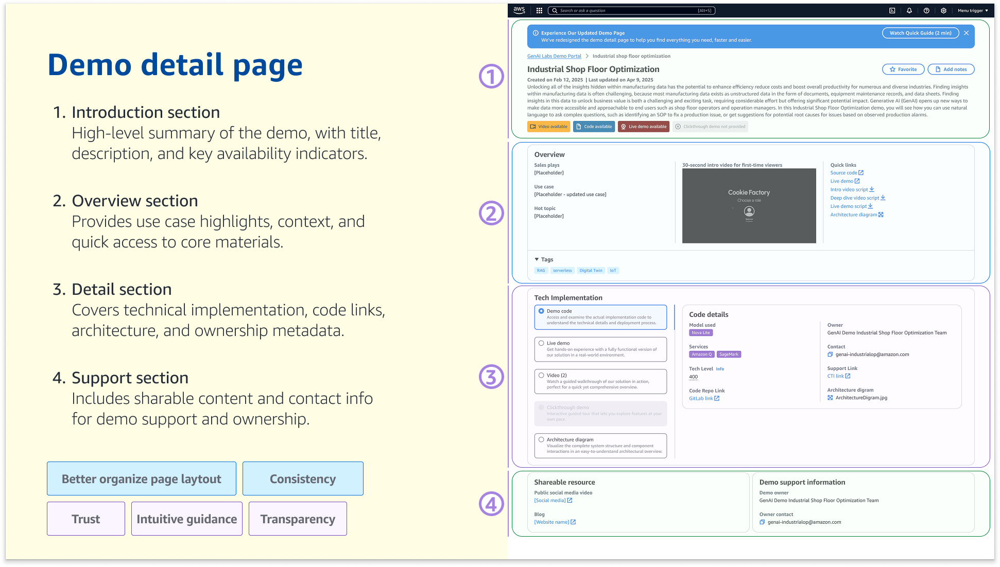
Layer 1 — Immediate Orientation
Placed at the top of the page:
- Demo title
- 3–4 sentence structured summary
- Demo modality indicators (Video / Code / Live / Click-through)
- Favorite action
This layer supports: 10-second orientation (Trust, Better page layout, Intuitive guidance, Modality clarity).
The modality indicators act as fast classification markers, allowing SAs to immediately determine how the demo can be used.
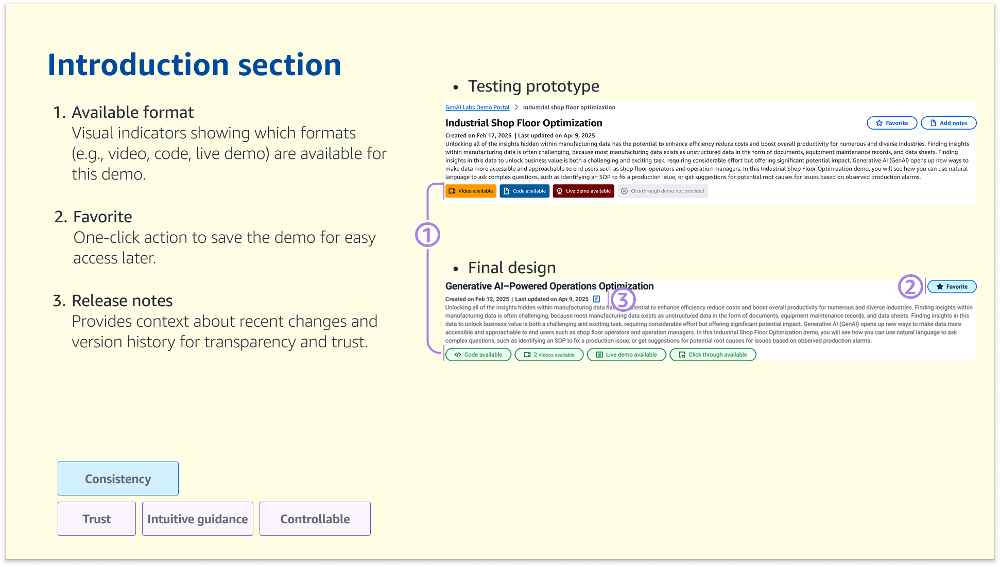
Layer 2 — Decision Validation
The second layer translates business framing and positioning requirements into structured blocks.
Overview Block
Includes:
- Sales play
- Explicit use case
- Hot topic alignment
- Tags
The use case field became mandatory during onboarding. Builders must clearly state which customer pain point the demo addresses.
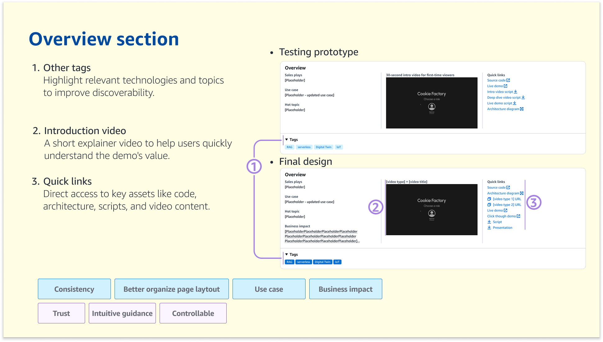
This layer supports: 30-second evaluation (Use case, Target persona, Target audience, Technical depth, Model transparency, Consistency).
Persona vs Audience Separation
Two distinct fields were introduced:
- Target Persona
- Target Audience
This separation supports business clarity and storytelling precision.
Technical Depth Container
Grouped into one structured block:
- Services used
- Model used
- Tech level (100 / 200 / 400 indicator)
- Code access
This grouping supports: Optional deep technical exploration (Technical depth, Services used, Model transparency, Source code, Additional resources).
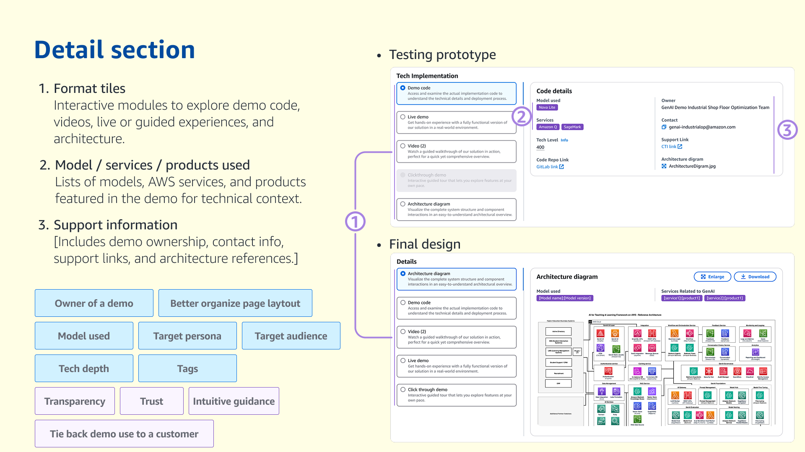
Layer 3 — Ownership and Resource Continuity
The secondary section includes:
- Demo owner
- Contact information
- Architecture diagram
- Script
- Public video
- Source code
- Shareable resources
This supports: Increased reuse confidence (Owner visibility, Additional resources, Confidence in customer fit).

Metadata and Tag Governance
The tagging system was standardized:
- Removed generic or redundant tags
- Structured tags by industry and focus area
- Clarified tag purpose
This supports:
- Reduced evaluation friction (Better page layout, Consistency, Tag governance, Intuitive guidance)
- Scalable onboarding standards (Consistency, Explicit use case requirement, Metadata governance)
Structural Outcome
The Detail Page now supports:
- 10-second orientation (Trust, Better page layout, Intuitive guidance)
- 30-second evaluation (Use case clarity, Persona distinction, Technical depth signaling)
- Optional deep technical exploration (Services used, Model transparency, Code access)
This redesign establishes:
- Clear business framing (Use case, Persona/Audience separation)
- Transparent technical signaling (Technical depth, Model transparency)
- Reduced evaluation friction (Layout hierarchy, Tag clarity, Structured metadata)
- Increased reuse confidence (Owner visibility, Shareable resources)
- Scalable onboarding standards (Standardized structure, Mandatory use case field)
Transition to Next Section
With the redesigned Detail Page structure defined, the next step was validation.
We needed to test:
- Whether the new hierarchy improved engagement
- Whether SAs could evaluate demos faster
- Whether confidence and reuse increased
This led to structured usability testing and A/B validation.
3.5 A/B Testing — Validating the New Detail Page Direction
After the workshop defined what SAs needed from a Detail Page, I validated two concrete design directions through structured usability testing. The goal was to confirm whether the redesigned page anatomy actually improved clarity, task completion, and confidence in real preparation workflows.
![[Placeholder: A/B testing summary – Prototype A vs Prototype B + ratings. Reference: Usability testing plan + usability testing report]](images/placeholder-ab-testing-summary.png)
Test setup
I designed a focused usability study scoped to one page: the Demo Detail Page, tested in two variants (see Usability testing plan).
Prototype A — Condensed version
Streamlined structure and prioritized content for fast scanning. Please refer to Layer 3 — Ownership and Resource Continuity for the design.
Streamlined structure and prioritized content for fast scanning. Please refer to Layer 3 — Ownership and Resource Continuity for the design.
Prototype B — Flexible version (widgets)
Added customization via widgets, giving SAs more control over what content appears.
Added customization via widgets, giving SAs more control over what content appears.
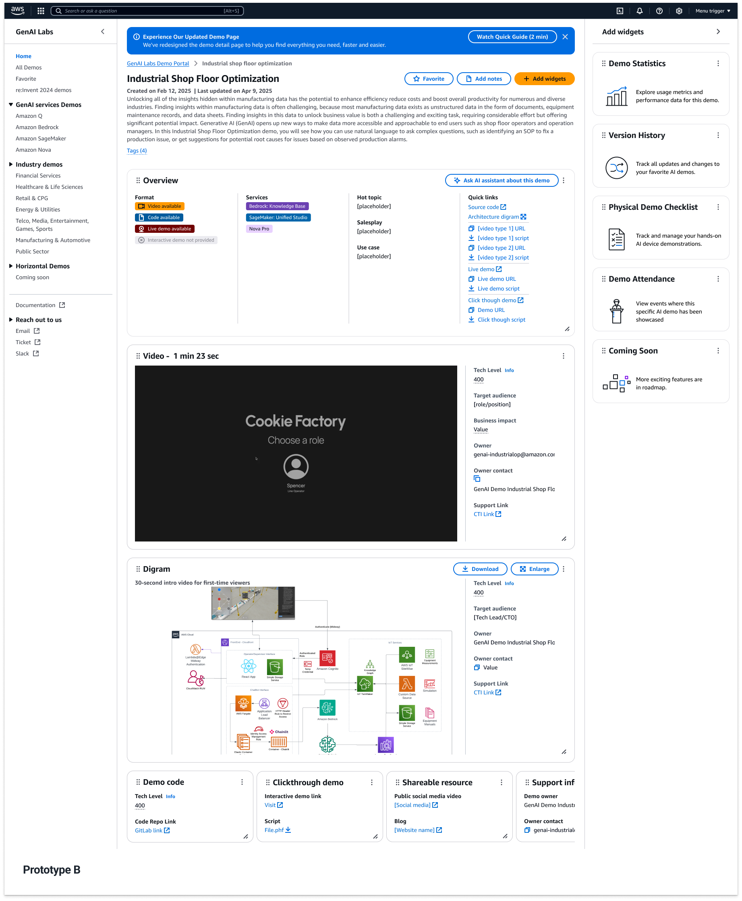
This approach allowed a direct comparison of how each page supported SA evaluation and preparation.
Why the Usability Study Focused on Clarity, Task Completion, and Confidence
The workshop defined several emotional requirements: Trust, Transparency, Intuitive guidance, Controllability, Customer fit clarity.
However, usability testing requires observable and measurable evaluation criteria.
Clarity, Task Completion, and Confidence were selected because they represent the behavioral outcomes of those emotional requirements.
They are not replacements.
They are testable manifestations.
They are testable manifestations.
The mapping is as follows:
- Trust manifests as whether users continue exploring the page and feel comfortable using it → reflected in Clarity and Confidence.
- Transparency manifests as whether users understand what the demo is, how it works, and when to use it → reflected in Clarity.
- Controllability manifests as whether users can successfully retrieve the information or perform actions needed → reflected in Task Completion.
- Customer fit clarity manifests as whether users feel certain the demo is appropriate for their meeting → reflected in Confidence.
In other words:
Emotional requirements define design intent.
Clarity, Task Completion, and Confidence measure whether that intent is achieved in real usage.
Clarity, Task Completion, and Confidence measure whether that intent is achieved in real usage.
Because these three dimensions are: Observable in session behavior; Comparable across prototypes; Rateable on a 1–5 scale; Directly tied to SA workflow — they became the evaluation framework for the A/B study.
Participants
We ran sessions with 11 participants total:
- 6 internal GenAI Labs team members
- 5 external Solution Architects (SAs) from other business teams
This mix helped validate both presenter needs and builder expectations around how demo context should be communicated (see Usability testing report).
Method: what we tested and why
Each participant reviewed both prototypes and completed structured prompts tied to real SA tasks:
Prototype A (Condensed) — evaluation focus
- Whether the page communicates key demo information quickly
- Comprehension of the top section and demo format tags
- Navigation through the Overview section (sales info, intro video, quick links)
- Scanability of the Demo Detail / Tech Implementation content
Prototype B (Flexible) — control + customization focus
- Whether participants could understand the purpose of widgets
- Whether they could complete a direct customization task (e.g., remove the widget containing the in-depth demo video)
- Whether widget-based flexibility supported their workflow moments
At the end of each session, participants rated both prototypes on a 1–5 scale and explained what would improve confidence during customer-facing preparation.
Results
Overall ratings
- Prototype A (Condensed): 4.4 / 5
- Prototype B (Flexible/widgets): 3.6 / 5
This result showed a clear preference for a page that prioritizes immediate comprehension over configurable control.
Key finding: widget flexibility created friction
7 of 11 participants found the widget system confusing or unclear, especially for first-time use.
Common reactions included uncertainty about: what widgets were for; what would happen after clicking; whether widgets were relevant to their use case.
Some participants liked the concept of customization, but still asked for clearer guidance and stronger alignment to real SA needs.

Decision and output
Based on the testing signal, I aligned the team on moving forward with the Condensed direction (Prototype A) as the primary Detail Page structure.
This decision supported the core requirement the system was now facing post–re:Invent scale:
- fast orientation at the top of the page
- clear evaluation structure without extra configuration burden
- optional depth only when needed
3.6 Integrating Favorites at the Post-Search Stage
By this stage, the Discovery journey had stabilized.
Search friction was reduced. Users were consistently reaching the Detail Page.
This marked the transition from Search to Post-Search behavior.
The structural question became simple: If a demo passes evaluation, how does it get reused next time?
Without a saving mechanism, SAs had to:
- Rely on memory
- Repeat the full discovery flow
Neither supports scalable reuse.
Favorites completed the journey: Search → Evaluate → Save → Reuse
This directly extended the Discovery model established in 3.2.
The timing was intentional. In Phase 1, we rebuilt homepage and information architecture — there was no bandwidth to introduce persistent user state. In this phase, engineering work was already scoped to the Detail Page. Adding Favorites required only localized changes and aligned naturally with the evaluation moment.
The top-right placement leverages established interaction patterns — no behavioral learning required.

Discovery flow extended from Search → Evaluate to Search → Evaluate → Save → Reuse

Favorite integrated at the decision point (top-right of Detail Page)
This addition did not expand the system. It completed it.
The Portal evolved from a discovery surface to a reusable working library.
3.7 System Upgrade Outcome
Phase 2 standardized the Detail Page structure and surfaced the key decision signals SAs need — including use case, technical depth, ownership, and relevance — in a consistent and visible way. This structural consistency and signal visibility enabled faster decision-making and significantly improved preparation efficiency.
By introducing Favorites at the point of decision, the system also shifted behavior from repeated search to cumulative reuse, making demo preparation more sustainable over time.
After Favorites was introduced, 78.3% of demos across the Portal were favorited at least once. Some high-visibility and newly released demos reached over 5,300 total favorites — representing approximately one quarter of active users repeatedly engaging with the same demo assets.
Engagement also expanded beyond Field SAs. Internal designers and other roles began actively favoriting demos, with nearly 60+ designer accounts favoriting specific newly launched service demo series.

4. Phase 3 — Organizational Shift and Platform Evolution
#vibecoding
#Figma2Code
#Governance
#Collaboration
#PlatformEvolution
4.1 When the Org Changed, the System Had to Change
After the initial growth phase, GenAI Labs transitioned from the Sales organization to Marketing.
This introduced a new primary persona: Product Marketing Managers (PMMs).
Unlike SAs, PMMs were not searching for a single demo for one conversation. They were organizing demos at the event level.
Within a single event:
- Some PMMs managed a specific industry
- Some managed a specific service (e.g., Bedrock)
- One or two Lead PMMs oversaw the full demo lineup
This layered coordination structure did not exist in earlier phases.
The Portal, originally optimized for individual discovery and evaluation, now needed to support structured collaboration.

4.2 Why Favorites Was No Longer Enough
In Phase 2, Favorites helped SAs retain demos for personal preparation.
However, Favorites was: Single-user; Not shareable; Without role differentiation; Without governance control.
Event planning required: Shared demo groupings; Multiple contributors; Controlled visibility; Permission management.
The limitation of Favorites revealed the need for a structured collection mechanism.

4.3 Introducing Collection
Collection extended the existing demo logic without rebuilding the system.
A Collection allows PMMs to:
- Create a structured demo group
- Add or remove demos
- Share the group
- Assign role-based permissions
Rather than introducing a separate CMS, Collection reused: Existing demo metadata; Existing modality structure; Existing rendering framework.
New variables were introduced only when structurally necessary.
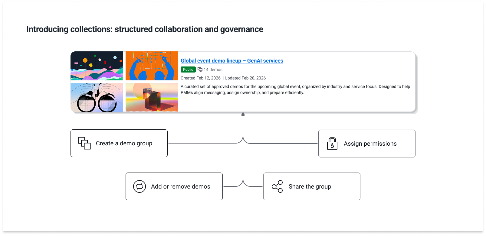
4.4 Role-Based Governance
To support layered coordination, Collection introduced three roles:
- Owner — Full administrative control; Can modify permissions
- Maintainer — Can add or remove demos; Cannot change permission structure
- Reviewer — View-only access
The Reviewer role addressed a real constraint: Some demos must remain restricted until keynote releases or public announcements.
Governance was not theoretical. It was driven by operational timing requirements.
4.5 Validating Structure Before Release (Kiro & Vibe Code)
Because Collection introduced a new structural pattern, it was not released directly after Figma design completion.
Before rollout to the SA team, the pattern was structured and tested inside Kiro to validate technical feasibility and system behavior.
Through this internal "vibe code" validation process, the goal was to ensure:
- Permission logic aligned with real governance scenarios
- Metadata relationships remained structurally consistent
- Rendering handled variable demo counts and modality combinations
This reduced implementation friction and minimized structural rework after engineering handoff.
Design decisions were treated as executable system constructs — not static interface artifacts.
Using the Collection card as a case study, the design moved from Figma to MCP into Kiro for structural validation and refinement, where the generated code became the implementation baseline for the SA team.
A sample of the Collection card implementation — a vibe coding example — is attached for reference (view sample).

4.6 From Internal List to Event Landing Page
Event execution introduced another requirement: Collections needed to function as lightweight public-facing landing pages.
When creating a Collection, PMMs can select a display style.

The style parameter: Sends configuration to a backend style generator; Adjusts CSS; Applies predefined visual themes; Automatically renders demos based on: Demo count, Modality, Metadata.

The structural framework remains constant. The visual presentation adapts.
This enabled event publishing without introducing a new system layer.
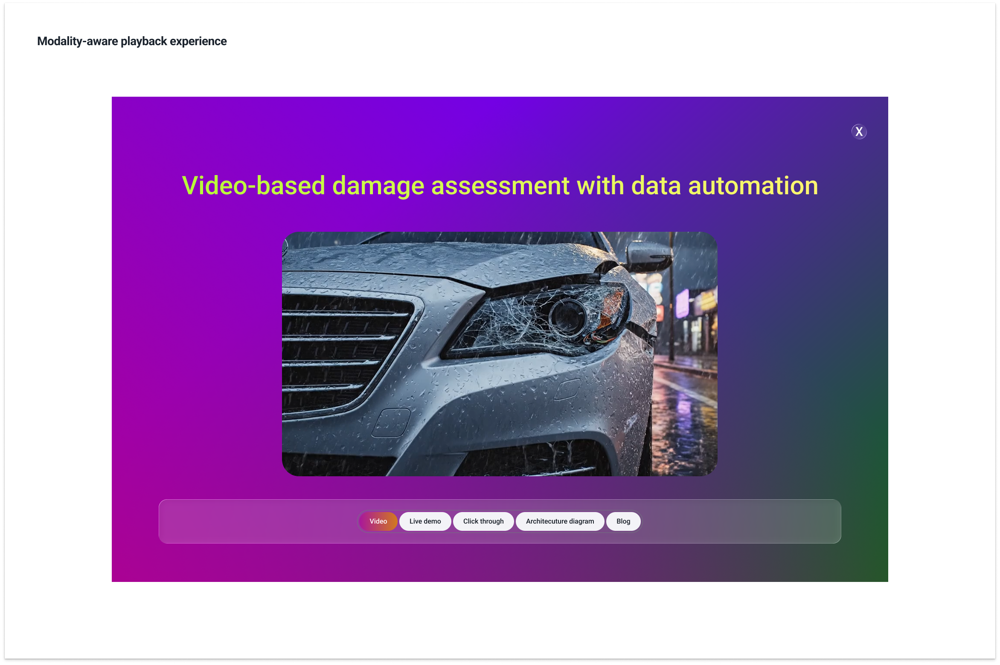
4.7 Phase 3 Summary
Phase 1 focused on discoverability. Phase 2 supported confident evaluation. Phase 3 introduced governance and collaborative structure.
The Portal evolved from: Individual discovery tool → Multi-layer coordination system → Lightweight event publishing mechanism
This evolution was shaped by organizational change and operational constraints.
5. Designing a New Way of Working in an AI-Driven Shift
When I joined GenAI Labs in July 2024, the Demo Portal was a lightweight internal directory.
By January 2026, it had evolved into a cross-functional platform supporting Sales, Marketing, Builders, and Leadership.
This evolution was not defined by a fixed roadmap. It unfolded as AI accelerated demo production, reduced development cost, and reshaped how teams collaborated.
The challenge was not simply to improve the interface. It was to design how demo work operates under AI-driven change.
1. Phase-by-Phase Evolution
Phase 1 addressed low discoverability. Search was reframed into a structured discovery system aligned with industry logic.
Phase 2 followed executive exposure and rapid global adoption. The Demo Detail Page was redesigned to support confident evaluation and reuse.
Phase 3 emerged after the team transitioned from Sales to Marketing. The introduction of Product Marketing Managers required layered coordination, governance, and controlled sharing. Collection was introduced to support structured event planning and role-based collaboration.
Each phase responded to a different organizational constraint. None replaced the previous layer. The system expanded while preserving continuity.
2. Building Through Reuse and Controlled Expansion
Engineering capacity remained finite throughout.
Rather than rebuilding the system with each shift, the Portal evolved through reuse: The navigation hierarchy introduced in Phase 1 later supported metadata governance; Detail Page modularity from Phase 2 enabled event-level rendering; Favorites logic informed the conceptual foundation of Collection.
New structural elements were introduced only when necessary. Collection did not exist previously. It required: Role-based governance (Owner / Maintainer / Reviewer); Shared demo grouping; Controlled visibility.
Even then, it reused: Existing metadata structures; Existing modality logic; Existing rendering framework.
The system grew by minimizing new variables and recombining existing components.
3. Kiro Validation and Vibe Coding Before Release
Design artifacts were not handed directly from Figma to the SA team.
When Collection introduced a new structural pattern, it was first structured and tested inside Kiro.
This internal vibe coding process was used to validate feasibility before release.
The goal was not full implementation. It was structural verification: Permission logic aligned with governance scenarios; Metadata relationships remained consistent; Rendering behavior handled variable demo counts and modalities.
This reduced implementation friction and minimized structural rework after handoff.
As AI lowers the cost of code generation, the constraint shifts from production speed to architectural clarity.
Vibe coding shortened feedback loops and allowed design decisions to function as executable hypotheses.
4. Meet Figma — Elevating Design in the AI Era
As development cycles accelerated, a new question emerged: If AI makes code easier to generate, where should design effort be concentrated?
This led to an internal initiative titled Meet Figma (see Meet Figma document).
Rather than focusing on visual refinement, it reframed how design operates in an AI-assisted workflow.
The initiative explored: How structured Figma files reduce ambiguity before implementation; How Figma MCP supports design–engineering collaboration; How reusable cross–design system components reduce long-term maintenance cost.
Supporting demo file: Meet Figma demo file (Access available upon request.)
As code becomes easier to produce, design's responsibility shifts upward: From producing interface artifacts → To shaping workflow efficiency → To defining structural clarity → To enabling sustainable collaboration.
5. What This Project Ultimately Designed
Over these months, the Demo Portal evolved from a searchable directory into a structured operating layer for demo work.
Each phase introduced a new structural capability:
Phase 1 made demos findable at scale.
Phase 2 made them evaluable and reusable under real presentation pressure.
Phase 3 enabled coordinated event planning and role-based governance.
None replaced the previous layer. Each extended it.
The result was not a feature set.
It was a composable system:
Find → Evaluate → Save → Organize → Publish.
It was a composable system:
Find → Evaluate → Save → Organize → Publish.
As AI accelerated demo creation, the constraint shifted from production speed to structural clarity.
This project designed the structure that allowed demo work to scale without collapsing under its own complexity.